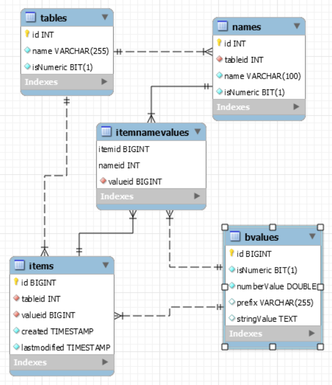

- Dynamic schema, easily add new columns and ignore stale columns
- Automatic indexing on every column, including full-text
- Internally normalized storage supports denormalized schemas
-
Choose between
SQLite
and
MySQL
to power metastrings
Check out the
metastrings Open Source Project
on GitHub
There are two ways to integrate metastrings into your codebase
-
Use the client API in your application,
and run metastringserver on your server
This is the client-server database architecture,
like how you use
MySQL
or
PostreSQL
Streaming I/O between client and server makes for high throughput and low resource usage
-
Use the Command class in your application with no separate server
This is the server-less database architecture,
used by SQLite
and
Microsoft Access
The benefit of this approach is lower overhead and no separate server to maintain
There are two database engines to choose to power metastrings
-
SQLite - A file-based server-less SQL database engine
It is best suited to write once / read many,
not for general read/write access
-
MySQL - A general purpose client-server SQL database
No match for SQLite for absolute performance,
but well suited to day-to-day read/write access
| |
Client-Server |
Server-less |
| SQLite |
Wrap SQLite in a client-server package for sharing a database.
This is best employed for a period of single-user writing,
followed by multi-user read access
|
For a desktop application in need of a database,
put the metastrings NoSQL interface on top of SQLite
for high productivity and simple database maintenance
|
| MySQL |
Not recommended.
Adding another network layer on top of MySQL just adds unnecessary overhead
|
A great combination of technologies;
add NoSQL dynamic schema and automatic indexing to an awesome SQL database engine,
and you've got amazing technology to power your next database project
|

Client-Server
metastrings ships with these programs for the client-server architecture...
-
metastringserver
-
For the client-server configuration, this is the HttpListener-driven server
Configure the .config file, especially where to put the database file, then you're off to the races!
Config settings:
port - TCP port to bind to a serve
log - Whether to write high-level goings to the console
dump - Whether to write all JSON requests and responses to the console
time - Whether to enable ScopeTiming so programs can get performance profiles
-
msloader
-
CSV-ingesting client-server program for loading the database
As a quick test,
pipe the output of fscsv into msloader to load the database with file system data
Usage: msloader <server URL> <table name> [-reset] [-cold] [-time]
-reset: remove the Items from the database; add -cold to remove all names and values
-time: output a performance profile of where things took so long
-
fscsv
-
CSV-generating program for describing a file system
Provide one or more directory paths on the command prompt,
and it will get info about the files in those directories and output these as CSV to stdout
-
msquery
-
Schema-describing, query-issuing, and SQL query-describing client-server client program
Usage: msquery <server URL> [-schema <table name, or -any->] [-query <query file path>] -sql -csv
-schema: use this to dump the column names for one table or all tables in the server
-query: use this to provide metastrings SQL to execute
pass -sql to output the SQLite SQL generated from the metastrings SQL
pass -csv to output results in CSV format, otherwise it's in a basic JSON-like name-value output
-
metaq
-
Server-less interactive command processor
This is a very powerful tool for troubleshooting queries.
You enter your SQL queries, then the values for each parameter in the query,
and it writes your query, then the SQLite or MySQL query generated by metastrings to metaq.log in the current directory.
It also writes the query results to that file, so you get a complete query-to-results snapshot.
> select id, title from beats where title matches @title
@title: Fresh
id: 734348
title: Fresh One
relevance: 2.353236198425293
===
Results: 1
>
-
metafiles
Benchmark for comparing MySQL and metastrings ingestion performance
Usage: metafiles <path to directory to index and query> ...
Pass one or more directory paths, and it gets file system info for every file and loads this info into
a MySQL table and a metastrings table
Initial results show that when metastrings has not seen the files before, it takes about as long as MySQL
If metastrings has the files, it's over 2X faster than MySQL, so metastrings is great at UPSERT
In terms of space on disk, metastrings' data file is about 25% larger than the MySQL schema size
So you trade a little cold ingestion performance and a little storage on disk,
for the features outlined above
Libraries
All libraries are built into one assembly, mslib.
They were once separate assemblies,
but this proved unwieldy when using different libraries in different situations
This is the library that client-server clients use to interact with the database server
-
define - streaming upsert
- Begin - Specify the table and column names
- WriteRecord - Write a row of data
- End - Finish up processing
-
query - streaming SQL-like querying
- Execute - Issue the query
- Read - Get row data
-
api
- Get - Get data from a table given primary key values
- Define - Object-based upsert
- GetSchema - Reveal the tables and columns in the DB
- QueryGet - Object-based query
- Delete - Delete rows from a table by primary key value
- Drop - remove a table, including its columns and rows
- Reset - remove all tables from the database, optionally names and values
- GetSql - get the SQLite SQL that will implement a metastrings query
- GetTiming - runtime the performance profile, optionally resetting the counters
-
ops - client-server communication for the api class
-
queries - classes passed between client and server
Note, when using the Command class server-less approach, you use these same classes
Rudimentary CSV library
-
CsvPrep - Convert raw text into CSV
-
CleanseCsv / DecodeCsv
-
Deal with nulls and multi-line text
-
CreateCsv
-
Take a list of strings or objects and generate a line of CSV text
-
CsvParser
-
Supports reading lines of CSV from stream-like data sources
-
CsvTextReader
-
Line-reading interface and implementations
Implementations of the server-side library of rows and columns of the dynamic schema
- Tables - the schema and primary key definition
- Items - the rows of the database
- Names - the columns of the database
- Values - the row data
- NameValues - get name-values literals from ids
Classes that implement the server-side library
-
Sql
- convert a query into a SQLite/MySQL SQL statement
This is where the magic of client SQL conversion takes place
-
Command
- server-side implementation of client API
If it's defined in the api, it's implemented here.
You use this class directly to go server-less.
- Context - database connection and SQLite/MySQL management
- Reader - database reader wrapper
- Server - HttpListener-based server for the client-server configuration
Core classes for implementing the project
-
ListDictionary
A List/Dictionary hybrid, used to keep the order of KeyValue Adds as the order of KeyValue iteration
This is needed for maintaining the order of keys added in to match the order of values read out
-
ScopeTiming
-
Lightweight timing framework for establishing performance profiles
-
Types
-
Central location for the little types used throughout the codebase,
like MetaStringException
-
Utils
-
Low-level static class for getting things done
- HashString - SHA-256
- Serialize / Deserialize - JSON wrappers
- BatchUp - turn a bunch of individual SQL statements into batches of SQL of the same size
- SplitItUp - turn a list of items into a number of lists of items
- HandleException - robust WebException error handling
- ConvertDbInt... - DB null-handling number getting
- CleanName - make a unique column valid name for SQL building
-
IsWord / IsParam / IsNameReserved / Validate...
validation of tokens to keep columns, parameters, and operations SQL clean